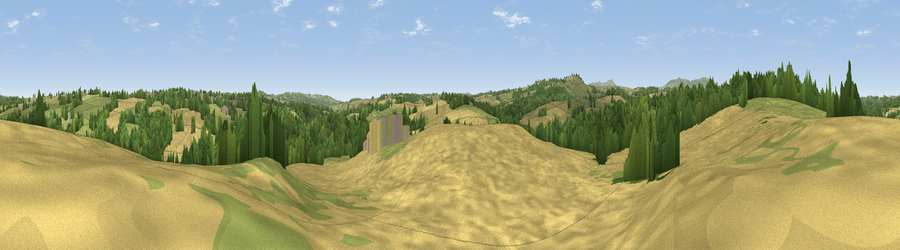

Viewpoint near Highley
#30389 in England · top 68% of its area beats it · near HighleyWhere it is
The exact computed spot (SO 72025 83975). Click the marker for map links.
The view, rendered

A 360° render of this exact spot computed from the terrain model, tree cover and land cover — summer colours, afternoon light, calibrated against photographs of famous viewpoints. Real trees, hedges and buildings will differ in detail.
The panorama
Grey silhouette: terrain skyline in each direction (720 bearings, Earth curvature and refraction included). Dashed green: skyline with trees (+15 m) and buildings (+8 m) as obstacles. Blue strip: how far the ground is visible on each bearing.
Where the view opens
Wedge length = distance to the farthest visible ground on that bearing (vegetation-aware). Rings at 10, 25 and 50 km.
What fills the view
47% cropland · 29% grassland · 23% woodland · 1% built-up
Angular shares of the visible panorama (visual magnitude), not map area. Landscape diversity 0.48 (0–1 Shannon).
Key numbers
More beautiful places nearby
The staircase of upgrades: each row has a higher view potential than everything closer. Driving times are estimates from straight-line distance, calibrated against real road routing — check an actual route before setting out.
| Place | Direction | Drive | Score |
|---|---|---|---|
| Viewpoint near Highley | ENE · 2 km | ~5 min | 44.1 |
| Viewpoint near Hampton Loade | NNE · 2 km | ~6 min | 59.6 |
| Viewpoint near Chorley | SW · 3 km | ~7 min | 60.6 |
| Viewpoint near Chorley | SW · 3 km | ~8 min | 64.9 |
| Knowle Hill | SW · 3 km | ~8 min | 75.5 |
| Viewpoint near Burwarton | W · 12 km | ~23 min | 83.4 |
| Titterstone Clee | WSW · 14 km | ~26 min | 83.8 |
| Viewpoint near Little Wenlock | NNW · 26 km | ~42 min | 86.6 |
52.45301, -2.41308 · source: screening · position refined by local search. Computed location — check access rights before visiting.